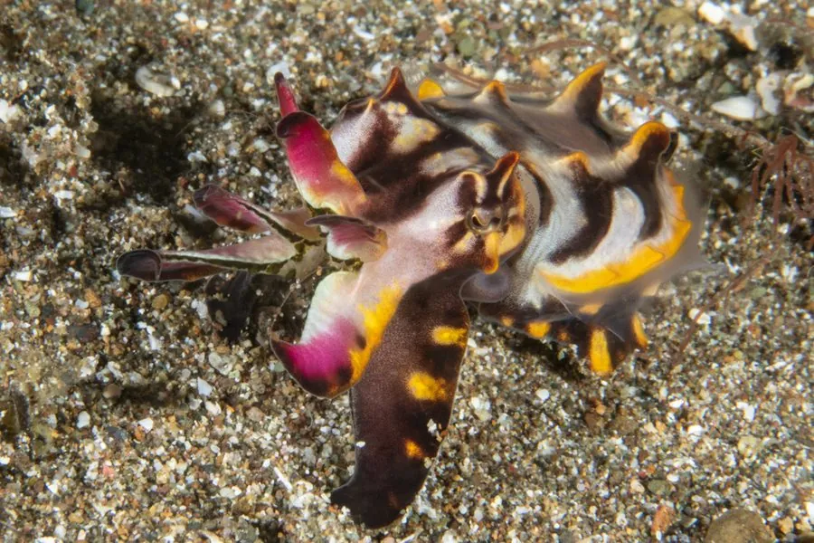

软体动物 · 动物界
火焰乌贼 Metasepia pfefferi

一生多在海底爬行的小型乌贼，体表布满火焰般的橙红斑纹，受惊时颜色骤然变化，是少数有毒的乌贼之一。
- 分类
- 门软体动物门纲头足纲目乌贼目科乌贼科属后乌贼属
- 栖息环境
- 热带浅海的沙泥、碎贝壳和软泥底质，水深通常不足八十米
- 地理分布
- 印度洋东部至西太平洋热带海域，包括印度尼西亚、菲律宾、巴布亚新几内亚和澳大利亚北部
- 保护级别
- 尚无正式评估；水族贸易捕捉构成一定压力
物种志
火焰乌贼体型娇小，外套膜长约六厘米，连腕全长不过十厘米左右，体重只有几十克。身体扁平，腕足短而宽，体表在深红、橙黄与紫褐之间分布着火焰状的斑驳花纹，受惊时色素细胞迅速收缩或扩张，颜色骤然加深闪变，形成警告效果。与多数乌贼不同，它的肌肉组织含有河豚毒素，是已知少数有毒的乌贼，鲜艳体色正是一种警戒信号。
它分布于印度洋东部至西太平洋的热带浅海，包括印度尼西亚、菲律宾、巴布亚新几内亚和澳大利亚北部，喜欢在沙泥、碎贝壳和软泥底质上活动，水深通常不超过八十米。它不擅长长距离游泳，而是用腕足在海底交替爬行，偶尔喷水短距离移动，白天活动，捕食小鱼和甲壳类。产卵时把卵一枚枚粘在礁石或贝壳下方，并守护至孵化。水族贸易的捕捉对它有一定压力，目前尚无正式评估。
形态与习性
- 食性捕食小鱼、小虾和底栖甲壳类
- 体长外套膜约六厘米，连腕全长约十厘米
- 体重通常只有几十克
- 毒素肌肉组织含河豚毒素，为已知少数有毒乌贼
- 运动以腕足在海底爬行为主，偶尔喷水短距离移动
- 繁殖卵逐枚粘附于礁石或贝壳下方，护卵至孵化
趣味知识
- 火焰乌贼不靠游泳捕食，而是用腕足在海底一步步爬行，像一只长着触手的小甲虫。
- 它是少数被证实肌肉含河豚毒素的乌贼，鲜艳的火焰纹其实是在警告天敌。
- 受到惊扰时，它全身颜色会在极短时间内加深或闪变，效果如同火焰窜动。